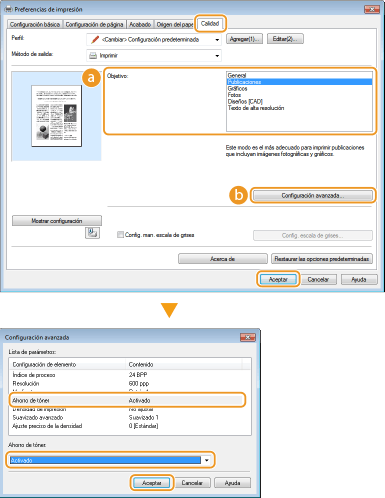

0KXF-01J
 |
Puede configurar el controlador de impresora para imprimir documentos utilizando menos tóner.
|
|
Cuando está activada la opción de ahorro de tóner, es posible que las líneas finas y las partes con menor densidad salgan menos nítidas de lo habitual.
|
Pestaña [Calidad]  Seleccione el tipo de documento en [Objetivo] Haga clic en [Configuración avanzada] Seleccione [Ahorro de tóner] en la pantalla [Configuración avanzada] Seleccione [Activado] en la lista desplegable [Aceptar] [Aceptar]
Seleccione el tipo de documento en [Objetivo] Haga clic en [Configuración avanzada] Seleccione [Ahorro de tóner] en la pantalla [Configuración avanzada] Seleccione [Activado] en la lista desplegable [Aceptar] [Aceptar]

 [Objetivo] Impresión según el tipo de documento
[Objetivo] Impresión según el tipo de documentoSelecciona el tipo de documento para el que desea activar la opción de ahorro de tóner.
[Configuración avanzada]
Aparece una pantalla con una lista de configuración avanzada. Haga clic en [Ahorro de tóner] y seleccione [Activado] en la lista desplegable que aparecerá en la parte inferior de la pantalla.

Puede especificar si desea activar la opción de ahorro de tóner para cada tipo de documento. Especifique la opción de ahorro de tóner para cada tipo de documento en [Objetivo].
En la pantalla [Configuración avanzada], puede especificar varias opciones de impresión distintas a las opciones de [Ahorro de tóner]. Para obtener más información sobre la configuración, haga clic en [Ayuda] en la pantalla del controlador de impresora.